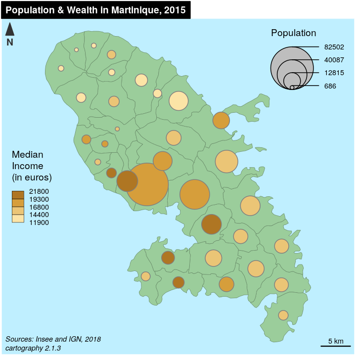
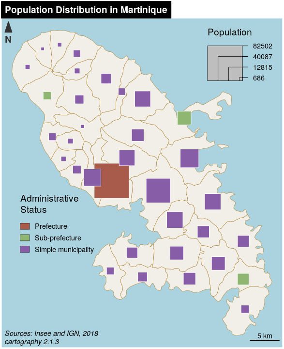
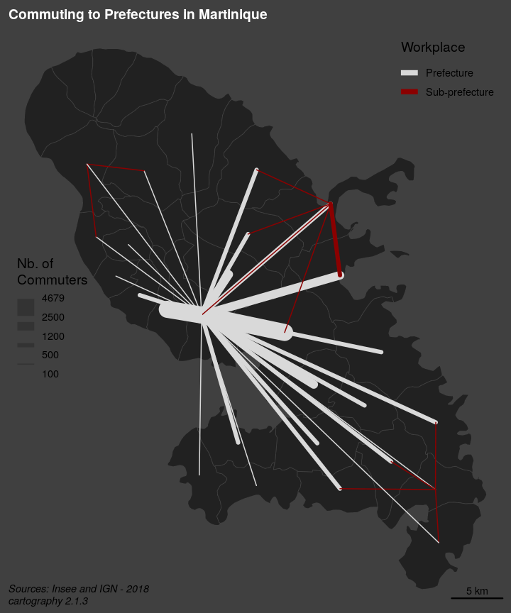

cartography
Timothée Giraud, Nicolas Lambert
2020-09-01
Source:vignettes/cartography.Rmd
cartography.RmdIntroduction
The aim of cartography is to obtain thematic maps with the visual quality of those build with a classical mapping or GIS software.
Users of the package could belong to one of two categories: cartographers willing to use R or R users willing to create maps. Therefore, its functions have to be intuitive to cartographers and ensure compatibility with common R workflows.
cartography uses sf or sp objects to produce base graphics. As most of the internals of the package relies on sf functionalities, the preferred format for spatial objects is sf.
Features
cartography’s functions can be classified in the following categories :
-
Symbology
Each function focuses on a single cartographic representation (e.g. proportional symbols or choropleth representation) and displays it on a georeferenced plot. This solution allows to consider each representation as a layer and to overlay multiple representations on a same map.
Each function has two main arguments that are:-
x, a spatial object (preferably ansfobject),
-
var, the name of a variable to map.
spobjects are handled through thespdfargument if the variable is contained within theSpatial*DataFrameand throughspdf,spdfid,df,dfidif the variable is in a separatedata.framethat needs to be joined to theSpatial*DataFrame.Many parameters are available to fine tune the cartographic representations. These parameters are the common ones found in GIS and automatic cartography tools (e.g. classification and color palettes used in choropleth maps, symbols sizes used in proportional symbols maps…).
-
Transformations
A set of functions is dedicated to the creation or transformation of spatial objects (e.g. borders extraction, grid or links creation). These functions are provided to ease the creation of some more advanced maps that usually need geo-processing.Map Layout
Along with the cartographic functions, some other functions are dedicated to layout design (e.g. customizable scale bar, north arrow, title, sources or author information…).Color Palettes
16 original color palettes are shipped within the package. Those palettes can be customized and combined.Legends
Legends are displayed by default along cartographic layers but more parameters are available throughlegend*()functions.Classification
getBreaks()give access to most of the classification methods used for data binning.
Examples of thematic maps
OpenStreetMap Basemap and Proportional Symbols
getTiles() and tilesLayer() download and display OpenStreetMap tiles. Be careful to cite the source of the tiles appropriately.
propSymbolsLayer() displays symbols with areas proportional to a quantitative variable (stocks). Several symbols are available (circles, squares, bars). The inches argument is used to customize the symbols sizes.
library(sf) library(cartography) # path to the geopackage file embedded in cartography path_to_gpkg <- system.file("gpkg/mtq.gpkg", package="cartography") # import to an sf object mtq <- st_read(dsn = path_to_gpkg, quiet = TRUE) # download osm tiles mtq.osm <- getTiles( x = mtq, type = "OpenStreetMap", zoom = 11, crop = TRUE ) # plot osm tiles tilesLayer(x = mtq.osm) # plot municipalities (only borders are plotted) plot(st_geometry(mtq), col = NA, border = "grey", add=TRUE) # plot population propSymbolsLayer( x = mtq, var = "POP", inches = 0.25, col = "brown4", legend.pos = "topright", legend.title.txt = "Total population" ) # layout layoutLayer(title = "Population Distribution in Martinique", sources = "Sources: Insee and IGN, 2018\n© OpenStreetMap contributors.\nTiles style under CC BY-SA, www.openstreetmap.org/copyright.", author = paste0("cartography ", packageVersion("cartography")), frame = FALSE, north = FALSE, tabtitle = TRUE) # north arrow north(pos = "topleft")

Choropleth Map
In choropleth maps, areas are shaded according to the variation of a quantitative variable. They are used to represent ratios or indices.
choroLayer() displays choropleth maps . Arguments nclass, method and breaks allow to customize the variable classification. getBreaks() allow to classify outside of the function itself. Colors palettes are defined with col and a set of colors can be created with carto.pal() (see also display.carto.all()).
library(sf) library(cartography) # path to the geopackage file embedded in cartography path_to_gpkg <- system.file("gpkg/mtq.gpkg", package="cartography") # import to an sf object mtq <- st_read(dsn = path_to_gpkg, quiet = TRUE) # population density (inhab./km2) using sf::st_area() mtq$POPDENS <- 1e6 * mtq$POP / st_area(mtq) # plot municipalities (only the backgroung color is plotted) plot(st_geometry(mtq), col = NA, border = NA, bg = "#aadaff") # plot population density choroLayer( x = mtq, var = "POPDENS", method = "geom", nclass=5, col = carto.pal(pal1 = "sand.pal", n1 = 5), border = "white", lwd = 0.5, legend.pos = "topright", legend.title.txt = "Population Density\n(people per km2)", add = TRUE ) # layout layoutLayer(title = "Population Distribution in Martinique", sources = "Sources: Insee and IGN, 2018", author = paste0("cartography ", packageVersion("cartography")), frame = FALSE, north = FALSE, tabtitle = TRUE, theme= "sand.pal") # north arrow north(pos = "topleft")

Colored Pencil and Typologies Map
getPencilLayer() transforms POLYGONS or MULTIPOLYGONS in MULTILINESTRINGS. This function creates a layer that mimicks a pencil hand-drawing.
typoLayer() displays a typology map of a qualitative variable. legend.values.order is used to set the modalities order in the legend.
library(sf) library(cartography) # path to the geopackage file embedded in cartography path_to_gpkg <- system.file("gpkg/mtq.gpkg", package="cartography") # import to an sf object mtq <- st_read(dsn = path_to_gpkg, quiet = TRUE) # transform municipality multipolygons to (multi)linestrings mtq_pencil <- getPencilLayer( x = mtq, size = 400, lefthanded = F ) # plot municipalities (only the backgroung color is plotted) plot(st_geometry(mtq), col = "white", border = NA, bg = "lightblue1") # plot administrative status typoLayer( x = mtq_pencil, var="STATUS", col = c("aquamarine4", "yellow3","wheat"), lwd = .7, legend.values.order = c("Prefecture", "Sub-prefecture", "Simple municipality"), legend.pos = "topright", legend.title.txt = "", add = TRUE ) # plot municipalities plot(st_geometry(mtq), lwd = 0.5, border = "grey20", add = TRUE, lty = 3) # labels for a few municipalities labelLayer(x = mtq[mtq$STATUS != "Simple municipality",], txt = "LIBGEO", cex = 0.9, halo = TRUE, r = 0.15) # title, source, author layoutLayer(title = "Administrative Status", sources = "Sources: Insee and IGN, 2018", author = paste0("cartography ", packageVersion("cartography")), north = FALSE, tabtitle = TRUE, postitle = "right", col = "white", coltitle = "black") # north arrow north(pos = "topleft")

Proportional Symbols and Choropleth Map
propSymbolsChoroLayer() creates a map of symbols that are proportional to values of a first variable and colored to reflect the classification of a second variable. A combination of propSymbolsLayer() and choroLayer() arguments is used.
library(sf) library(cartography) # path to the geopackage file embedded in cartography path_to_gpkg <- system.file("gpkg/mtq.gpkg", package="cartography") # import to an sf object mtq <- st_read(dsn = path_to_gpkg, quiet = TRUE) # Plot the municipalities plot(st_geometry(mtq), col="darkseagreen3", border="darkseagreen4", bg = "lightblue1", lwd = 0.5) # Plot symbols with choropleth coloration propSymbolsChoroLayer( x = mtq, var = "POP", border = "grey50", lwd = 1, legend.var.pos = "topright", legend.var.title.txt = "Population", var2 = "MED", method = "equal", nclass = 4, col = carto.pal(pal1 = "sand.pal", n1 = 4), legend.var2.values.rnd = -2, legend.var2.pos = "left", legend.var2.title.txt = "Median\nIncome\n(in euros)" ) # layout layoutLayer(title="Population & Wealth in Martinique, 2015", author = "cartography 2.1.3", sources = "Sources: Insee and IGN, 2018", scale = 5, tabtitle = TRUE, frame = FALSE) # north arrow north(pos = "topleft")

Proportional Symbols and Typology Map
propSymbolsTypoLayer() creates a map of symbols that are proportional to values of a first variable and colored to reflect the modalities of a second qualitatice variable. A combination of propSymbolsLayer() and typoLayer() arguments is used.
library(sf) library(cartography) # path to the geopackage file embedded in cartography path_to_gpkg <- system.file("gpkg/mtq.gpkg", package="cartography") # import to an sf object mtq <- st_read(dsn = path_to_gpkg, quiet = TRUE) # Plot the municipalities plot(st_geometry(mtq), col="#f2efe9", border="#b38e43", bg = "#aad3df", lwd = 0.5) # Plot symbols with choropleth coloration propSymbolsTypoLayer( x = mtq, var = "POP", inches = 0.5, symbols = "square", border = "white", lwd = .5, legend.var.pos = "topright", legend.var.title.txt = "Population", var2 = "STATUS", legend.var2.values.order = c("Prefecture", "Sub-prefecture", "Simple municipality"), col = carto.pal(pal1 = "multi.pal", n1 = 3), legend.var2.pos = c(692000, 1607000), legend.var2.title.txt = "Administrative\nStatus" ) # layout layoutLayer(title="Population Distribution in Martinique", author = "cartography 2.1.3", sources = "Sources: Insee and IGN, 2018", scale = 5, tabtitle = TRUE, frame = FALSE) # north arrow north(pos = "topleft")

Label Map
labelLayer() is dedicated to the display of labels on a map. The overlap = FALSE argument displays non overlapping labels.
library(sf) library(cartography) # path to the geopackage file embedded in cartography path_to_gpkg <- system.file("gpkg/mtq.gpkg", package="cartography") # import to an sf object mtq <- st_read(dsn = path_to_gpkg, quiet = TRUE) # plot municipalities plot(st_geometry(mtq), col = "#e4e9de", border = "darkseagreen4", bg = "lightblue1", lwd = 0.5) # plot labels labelLayer( x = mtq, txt = "LIBGEO", col= "black", cex = 0.7, font = 4, halo = TRUE, bg = "white", r = 0.1, overlap = FALSE, show.lines = FALSE ) # map layout layoutLayer( title = "Municipalities of Martinique", sources = "Sources: Insee and IGN, 2018", author = paste0("cartography ", packageVersion("cartography")), frame = FALSE, north = TRUE, tabtitle = TRUE, theme = "taupe.pal" )

Links Map
getLinkLayer() creates a link layer from an sf object and a link data.frame (long format).gradLinkTypoLayer() displays graduated and colored links.
library(sf) library(cartography) # path to the geopackage file embedded in cartography path_to_gpkg <- system.file("gpkg/mtq.gpkg", package="cartography") # import to an sf object mtq <- st_read(dsn = path_to_gpkg, quiet = TRUE) # path to the csv file embedded in cartography path_to_csv <- system.file("csv/mob.csv", package="cartography") # import to a data.frame mob <- read.csv(path_to_csv) # select workplaces with administrative status = Prefecture or Sub-prefecture mob <- mob[mob$sj != "Simple municipality",] # create an sf object of links mtq_mob <- getLinkLayer( x = mtq, xid = "INSEE_COM", df = mob, dfid = c("i","j") ) # set figure background color par(bg="grey25") # plot municipalities plot(st_geometry(mtq), col = "grey13", border = "grey25", bg = "grey25", lwd = 0.5) # plot graduated links gradLinkTypoLayer( x = mtq_mob, xid = c("i", "j"), df = mob, dfid = c("i","j"), var = "fij", breaks = c( 100, 500, 1200, 2500, 4679.0), lwd = c(1,4,8,16), legend.var.pos = "left", legend.var.title.txt = "Nb. of\nCommuters", var2 = "sj", col = c("grey85", "red4"), legend.var2.title.txt = "Workplace", legend.var2.pos = "topright" ) # map layout layoutLayer(title = "Commuting to Prefectures in Martinique", sources = "Sources: Insee and IGN, 2018", author = paste0("cartography ", packageVersion("cartography")), frame = FALSE, col = "grey25", coltitle = "white", tabtitle = TRUE)

Isopleth Map
Isopleth maps are based on the assumption that the phenomenon to be represented has a continuous distribution. These maps use a spatial interaction modeling approach which aims to compute indicators based on stock values weighted by distance. It allows a spatial representation of the phenomenon independent from the initial heterogeneity of the territorial division.smoothLayer() heavily depends on the SpatialPosition package. The function uses a marked point layer and a set of parameters (a spatial interaction function and its parameters) and displays an isopleth map layer.
library(sf) library(cartography) # path to the geopackage file embedded in cartography path_to_gpkg <- system.file("gpkg/mtq.gpkg", package="cartography") # import to an sf object mtq <- st_read(dsn = path_to_gpkg, quiet = TRUE) # plot municipalities (only the backgroung color is plotted) plot(st_geometry(mtq), col = NA, border = NA, bg = "lightblue1") # plot isopleth map smoothLayer( x = mtq, var = 'POP', typefct = "exponential", span = 4000, beta = 2, nclass = 12, col = carto.pal(pal1 = 'brown.pal', n1 = 12), border = "grey", lwd = 0.1, mask = mtq, legend.values.rnd = -3, legend.title.txt = "Population\nPotential", legend.pos = "topright", add=TRUE ) # annotation on the map text(x = 692582, y = 1611478, cex = 0.8, adj = 0, font = 3, labels = "Distance function:\n- type = exponential\n- beta = 2\n- span = 4 km") # layout layoutLayer(title = "Population Distribution in Martinique", sources = "Sources: Insee and IGN, 2018", author = paste0("cartography ", packageVersion("cartography")), frame = FALSE, north = FALSE, tabtitle = TRUE, theme = "brown.pal") # north arrow north(pos = "topleft")

Grid Map
The grid-cell method is an option to overcome the arbitrariness and irregularity of an administrative division. It highlights the main trends in the data spatial distribution, splitting the territory in regular blocks. Statistical values are distributed over a regular grid. Cell values are classified and then displayed in areas of color. The principle adopted here is to set each cell’s value with a proportion of the initial geometrical units it overlay (share of intersected area).getGridLayer() builds a regular grid (squares or hexagons) based on a spatial object and computes data that match the grid layer. choroLayer() is then used to display the grid on a choropleth map.
library(sf) library(cartography) # path to the geopackage file embedded in cartography path_to_gpkg <- system.file("gpkg/mtq.gpkg", package="cartography") # import to an sf object mtq <- st_read(dsn = path_to_gpkg, quiet = TRUE) # Create a grid layer, cell size area match the median municipality area mygrid <- getGridLayer( x = mtq, cellsize = median(as.numeric(st_area(mtq))), var = "POP", type = "hexagonal" ) # Compute population density in people per km2 mygrid$POPDENS <- 1e6 * mygrid$POP / mygrid$gridarea # plot municipalities (only the backgroung color is plotted) plot(st_geometry(mtq), col = NA, border = NA, bg = "#deffff") # Plot the population density choroLayer(x = mygrid, var = "POPDENS", method = "geom", nclass=5, col = carto.pal(pal1 = "turquoise.pal", n1 = 5), border = "grey80", lwd = 0.5, legend.pos = "bottomleftextra", add = TRUE, legend.title.txt = "Population Density\n(people per km2)") layoutLayer(title = "Population Distribution in Martinique", sources = "Sources: Insee and IGN, 2018", author = paste0("cartography ", packageVersion("cartography")), frame = FALSE, north = FALSE, tabtitle = TRUE, theme = "turquoise.pal") # north arrow north(pos = "topleft")

Discontinuities Map
Discontinuities maps are based on the variation of a phenomena between contiguous units. This kind of representation focuses spatial breaks. The discontinuity intensity is expressed by the borders’ thickness.getBorders() is used to build a spatial object of borders between units. Each resulting borders contains the ids of its two neighboring units. It is possible to complement these borders with getOuterBorders() to compute borders between non-contiguous units (e.g. maritime borders). discLayer() computes and displays discontinuities, lines widths reflect the ratio or the absolute difference between values of an indicator in two neighboring units.
library(sf) library(cartography) # path to the geopackage file embedded in cartography path_to_gpkg <- system.file("gpkg/mtq.gpkg", package="cartography") # import to an sf object mtq <- st_read(dsn = path_to_gpkg, quiet = TRUE) # Compute the population density (inhab./km2) using sf::st_area() mtq$POPDENS <- as.numeric(1e6 * mtq$POP / st_area(mtq)) # Get a SpatialLinesDataFrame of countries borders mtq.contig <- getBorders(mtq) # plot municipalities (only the backgroung color is plotted) plot(st_geometry(mtq), col = NA, border = NA, bg = "lightblue1", xlim = c(690574, 745940)) # Plot the population density with custom breaks choroLayer(x = mtq, var = "MED", breaks = c(min(mtq$MED), seq(13000, 21000, 2000), max(mtq$MED)), col = carto.pal("green.pal", 6),border = "white", lwd = 0.5, legend.pos = "topright", legend.title.txt = "Median Income\n(euros)", add = TRUE) # Plot discontinuities discLayer( x = mtq.contig, df = mtq, var = "MED", type = "rel", method = "geom", nclass = 3, threshold = 0.4, sizemin = 0.7, sizemax = 6, col = "red4", legend.values.rnd = 1, legend.title.txt = "Relative\nDiscontinuities", legend.pos = "right", add = TRUE ) # Layout layoutLayer(title = "Wealth Disparities in Martinique, 2015", author = paste0("cartography ", packageVersion("cartography")), sources = "Sources: Insee and IGN, 2018", frame = FALSE, scale = 5, tabtitle = TRUE,theme = "grey.pal") # north arrow north(pos = "topleft")

Mapping sp Objects
SpatialPointsDataFrame and SpatialPolygonsDataFrame (from sp) are handled through the spdf argument if the variable is contained within the Spatial*DataFrame and through spdf, spdfid, df, dfid if the variable is in a separate data.frame that needs to be joined to the Spatial*DataFrame.
library(sp) library(cartography) data("nuts2006") # Plot a layer with the extent of the EU28 countries with only a background color plot(nuts0.spdf, border = NA, col = NA, bg = "#A6CAE0") # Plot non european space plot(world.spdf, col = "#E3DEBF", border = NA, add = TRUE) # Plot Nuts2 regions plot(nuts0.spdf, col = "grey60",border = "white", lwd = 0.4, add = TRUE) # plot the countries population propSymbolsLayer( spdf = nuts0.spdf, df = nuts0.df, spdfid = "id", dfid = "id", var = "pop2008", legend.pos = "topright", col = "red4", border = "white", legend.title.txt = "Population" ) # layout layoutLayer(title = "Population in Europe, 2008", sources = "Data: Eurostat, 2008", author = paste0("cartography ", packageVersion("cartography")), scale = 500, frame = TRUE, col = "#688994") # north arrow north("topleft")

Datasets
Several datasets are embedded in the package:
- A GeoPackage of Martinique municipalities can be imported via the
st_read()function of thesfpackage.- Sources: Base comparateur de territoires (upload date: 2018-09-25) & ADMIN EXPRESS-COG (2018 edition).
- Citation: Insee and IGN, 2018
- Fields:
- INSEE_COM: Municipality identifier
- STATUS: Municipality administrative status
- LIBGEO: Municipality name
- POP: Total population, 2015
- MED: Median disposable income adjusted per equivalent household member, in euros, 2015
- CHOM: Unemployed population, 2015
- ACT: Active population, 2015
- A csv file of professional mobility flows between Martinique municipalities.
- Sources: Flux de mobilité - déplacements domicile-lieu de travail (upload date: 2018-08-01)
- Citation: Insee, 2018
- Fields:
- i: Municipality of residence identifier
- j: Municipality of workplace identifier
- fij: Flows of workers (employed population, 15 y.o. or more, 2015, only flows > 100)
- sj: Administrative status of the workplace municipality
- A set of
spobjects anddata.frames on European regions (NUTS) can be loaded in the environment viadata(nuts2006). Each layer of this dataset is directly described in the documentation (e.g.?nuts0.spdf).